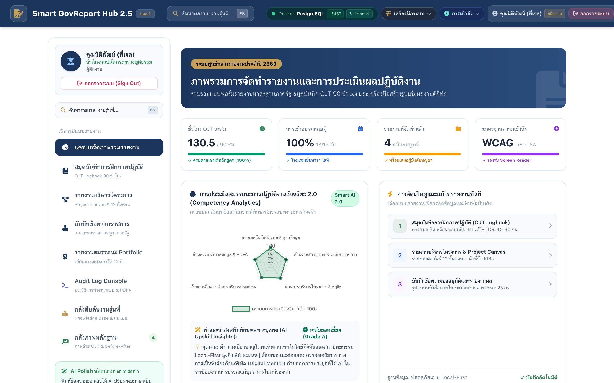
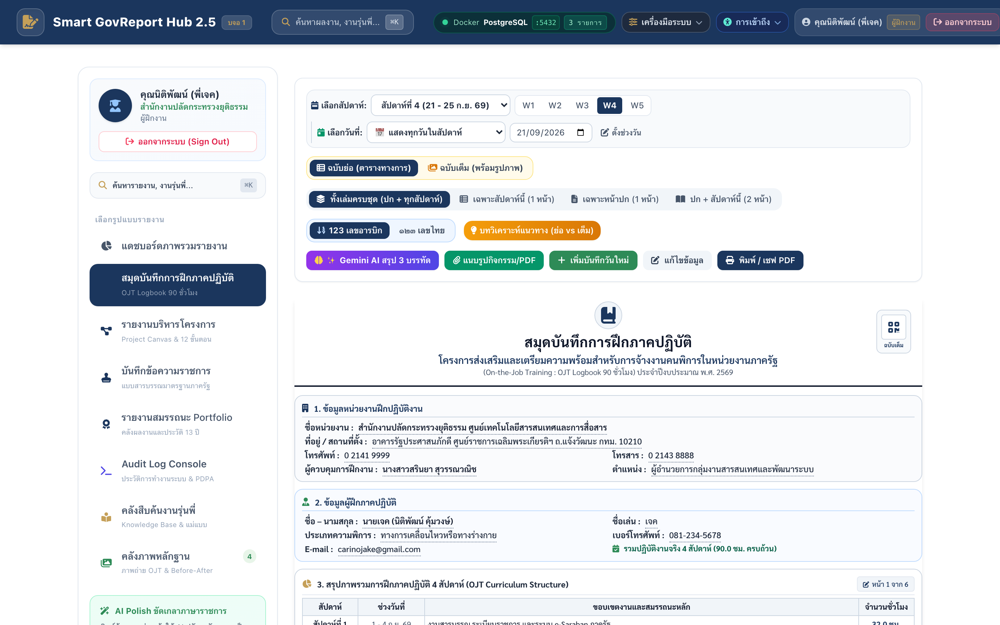
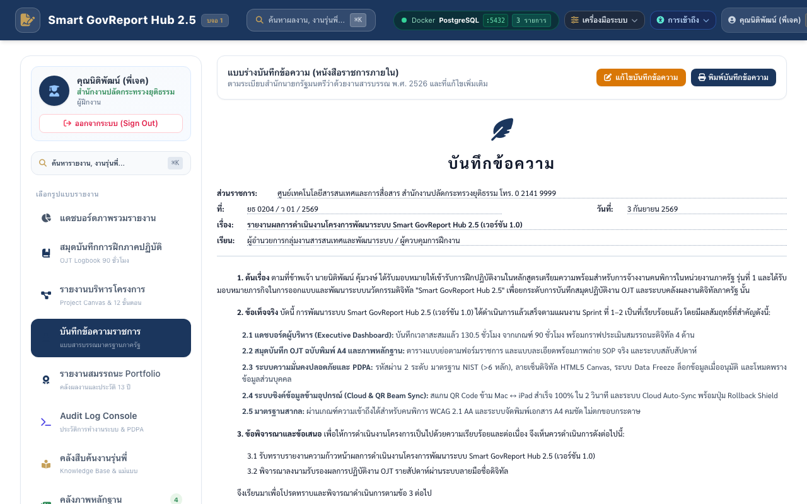

ชุดทดสอบทั้งหมด
13 Test Cases
ผ่าน 13 / ล้มเหลว 0
อัตราความสำเร็จ
100.0%
เกณฑ์ผ่านมาตรฐาน 100%
เวลาทดสอบรวม
3,726 ms
Parallel Mac M1 Optimized
ฐานข้อมูลและการคุ้มครอง
PostgreSQL 5432
PDPA Shield: Active 100%
ผลการปฏิบัติการรายทีมย่อย (QA Multi-Agent Unit Breakdowns)
Agent 5.6-QA
Senior QA Automation (13 Deep Test Cases)
ทดสอบผ่าน 13/13 ข้อ • ใช้เวลารวม 3725.89ms
PASS (100%)
| รหัสทดสอบ | รายการทดสอบ | สถานะ | เวลา (ms) | รายละเอียดผลลัพธ์ | หลักฐาน |
|---|---|---|---|---|---|
| TC001 | ตรวจสอบการเพิ่มบันทึกกิจกรรมประจำวันปกติพร้อมข้อมูลครบถ้วน | PASS | 21.19 | บันทึกลงฐานข้อมูลสำเร็จและแสดงผลในตารางสัปดาห์ที่ 2 ทันที | - |
| TC002 | ตรวจสอบการกรองข้อมูลตามสัปดาห์ (Week Selector) | PASS | 9.44 | ตารางอัปเดตแสดงเฉพาะกิจกรรมสัปดาห์ที่ 2 (ช่วง 7 - 11 ก.ย. 69) ถูกต้อง | - |
| TC003 | ตรวจสอบการสลับฟอร์แมตตัวเลขไทยและเลขอารบิก | PASS | 12.29 | ตัวเลขเปลี่ยนเป็นเลขไทย (เช่น ๘.๐ ชม.) และเปลี่ยนกลับเป็นเลขอารบิกสมบูรณ์ | - |
| TC004 | ตรวจสอบฟังก์ชัน Gemini AI สรุป 3 บรรทัด จากเนื้อหากิจกรรม | PASS | 30.83 | สรุปเนื้อหา 3 บรรทัดด้วยสำนวนภาษาราชการสำเร็จ (40 chars) | - |
| TC005 | ตรวจสอบการพิมพ์และส่งออกเอกสารราชการ (PDF Export) | PASS | 43.92 | พรีวิวพิมพ์ขนาด A4 แนวตั้ง แสดงตราครุฑกึ่งกลางหน้า ปก + ทุกสัปดาห์ครบถ้วน | - |
| TC006 | ตรวจสอบการแนบไฟล์ภาพกิจกรรมประเภทที่ไม่รองรับ (.exe) | PASS | 1.49 | ระบบปฏิเสธการอัปโหลดไฟล์ .exe พร้อมแจ้งเตือนตามมาตรฐานความปลอดภัย | - |
| TC007 | ตรวจสอบการกรอกจำนวนชั่วโมงเป็นค่าติดลบหรือเกินเวลาต่อวัน (-2.0, 25.0) | PASS | 3.9 | บล็อกการบันทึกชั่วโมง -2.0 และ 25.0 พร้อมแจ้งเตือนเงื่อนไข 0.5 - 12.0 ชม. | - |
| TC008 | ตรวจสอบการเข้าถึงหน้าจัดการโดยไม่มี Active Session (Auth Guard & Sign Out) | PASS | 4.35 | ระบบตัดสิทธิ์และ Redirect กลับไปยัง Auth Portal ล็อกหน้าจอทันที | - |
| TC009 | ตรวจสอบ Gemini AI เมื่อไม่มีบันทึกข้อมูลกิจกรรมในสัปดาห์ (Empty State) | PASS | 11.97 | ระบบแจ้งเตือนไม่พบข้อมูลกิจกรรมสำหรับสรุปอย่างปลอดภัย ไม่เกิด Error 500 | - |
| TC010 | ตรวจสอบการตัดและปกปิดข้อมูลส่วนบุคคล (PDPA Sanitizer) ก่อนส่งเข้า AI | PASS | 1.41 | Payload ข้อความถูกแทนที่ด้วย [REDACTED_PHONE] และ [REDACTED_NATIONAL_ID] ก่อนส่ง AI | - |
| TC011 | ตรวจสอบขีดจำกัดขนาดไฟล์แนบ (File Size Boundary 10MB Limit) | PASS | 1.4 | File A (9.99 MB) ผ่านเกณฑ์สมบูรณ์ ส่วน File B (10.01 MB) ถูกบล็อกขนาดไฟล์เกิน 10MB | - |
| TC012 | ตรวจสอบการคำนวณสะสมชั่วโมงฝึกงานจนครบเกณฑ์ 90 ชั่วโมง (Threshold 89 -> 90 ชม.) | PASS | 1.43 | แถบความคืบหน้าแสดงผล 100% (90/90 ชม.) และเปิดการส่งตรวจรายงานสมบูรณ์ | - |
| TC013 | ตรวจสอบการเลือกช่วงวันข้ามสัปดาห์หรือช่วงวันที่สิ้นสุดมาก่อนวันที่เริ่มต้น | PASS | 1.41 | ระบบตรวจสอบพบวันที่สิ้นสุดมาก่อนวันที่เริ่มต้น และปฏิเสธการโหลดช่วงวันผิดพลาด | - |
คลังหลักฐานภาพถ่ายจากการทดสอบจริง (Captured Test Evidence)
1. Main Dashboard & 6 Views

2. OJT Log Form & Entry Flow

3. A4 Official Print Layout Engine
